Foto de Eddie Redmayne e o personagem que interpreta Newt Scamander
Edward John David Redmayne é um ator e modelo britânico. Ele é mais conhecido pelos filmes Sete Dias com Marilyn, Les Misérables, Fantastic Beasts e A Teoria de Tudo, pelo qual ganhou o BAFTA, Globo de Ouro, SAG Award e o Oscar de Melhor Ator
Nascimento: 6 de janeiro de 1982, Westminster, Londres, Reino Unido
Cônjuge: Hannah Bagshawe (desde 2014)
Prêmios: Oscar de Melhor Ator, MAIS
Filhos: Luke Richard Bagshawe, Iris Mary Redmayne
Irmãos: James Redmayne, Charles Redmayne, Thomas Redmayne, Eugenie Redmayne
Pais: Richard Charles Tunstall Redmayne e Patricia Burke
Jude Law como Dumbledore
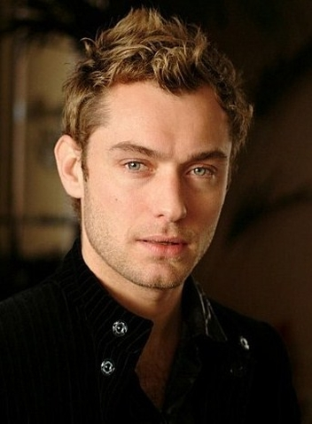
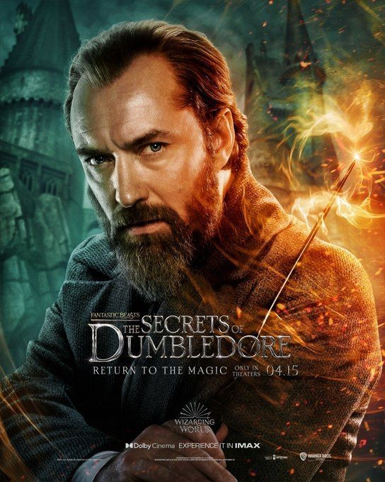
Foto de Jude Law e o personagem que interpreta Albus Dumbledore
David Jude Heyworth Law é um ator britânico. Começou a atuar no National Youth Music Theatre. Em 2000 recebeu o prêmio BAFTA de Melhor Ator Coadjuvante pela sua atuação em The Talented Mr. Ripley, que também lhe rendeu uma indicação ao Oscar.
Nascimento: 29 de dezembro de 1972, Lewisham, Londres, Reino Unido
Filhos: Iris Law, Rafferty Law, Ada Law, Rudy Law, Sophia Law
Cônjuge: Phillipa Coan (desde 2019)
Irmãs: Natasha Law
Pais: Peter Law, Maggie Law
Mads Mikkelsen como Gellert Grindelwald
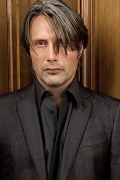
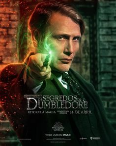
Foto de Mads Mikkelsen e o personagem que interpreta Gellert Grindelwald
Mads Dittmann Mikkelsen é um conceituado ator dinamarquês, conhecido por sua presença em filmes independentes e por balancear trabalhos estrangeiros e Hollywoodianos.
Nascimento: 22 de novembro de 1965, Østerbro, Dinamarca
Cônjuge: Hanne Jacobsen (desde 2000)
Filhos: Viola Jacobsen Mikkelsen, Carl Jacobsen Mikkelsen
Irmãos: Lars Mikkelsen
Pais: Henning Mikkelsen, Bente Christiansen
Dan Fogler como Jacob
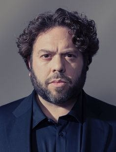
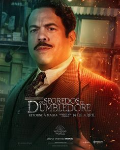
Foto de Dan Fogler e o personagem que interpreta Jacob
Daniel Kevin Fogler é um ator, dublador e comediante stand-up. Ele é mais conhecido por seus papéis nos filmes Balls of Fury, Take Me Home Tonight, Fantastic Beasts e na série de televisão Secrets and Lies.
Nascimento: 20 de outubro de 1976, Brooklyn, Nova Iorque, Nova York, EUA
Cônjuge: Jodie Capes Fogler (desde 2009)
Irmãos: Jason Fogler
Pais: Richard Fogler, Shari Fogler
Callum Turner como Theseus Scamander
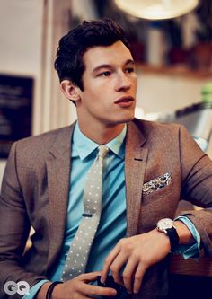
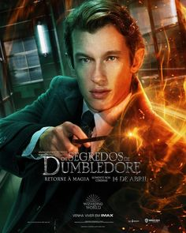
Foto de Callum Turner e o personagem que interpreta Theseus Scamander
Callum Robilliard Turner é um ator e modelo britânico. Ele é conhecido por seus papéis como Teseu Scamander em Animais Fantásticos: Os Crimes de Grindelwald e Animais Fantásticos: Os Segredos de Dumbledore
Nascimento: 15 de fevereiro de 1990, Londres, Reino Unido
Pais: Rosemary Turner
Jessica Williams como Eulalie Hicks
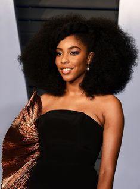
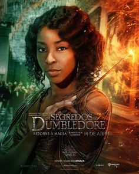
Foto de Jessica Williams e a personagem que interpreta Eulalie Hicks
Jessica Renee Williams é uma atriz e comediante norte-americana, que atualmente é uma correspondente sênior em The Daily Show.
Nascimento: 31 de julho de 1989, Condado de Los Angeles, Califórnia, EUA
Victoria Yeates como Bunty
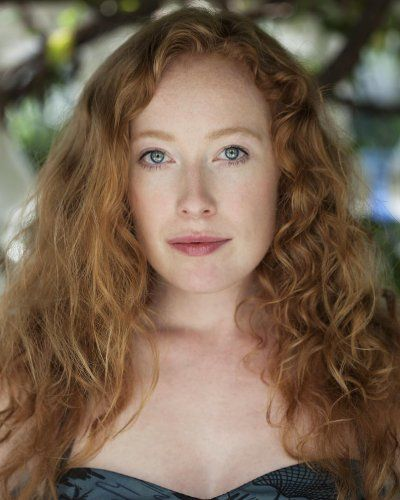
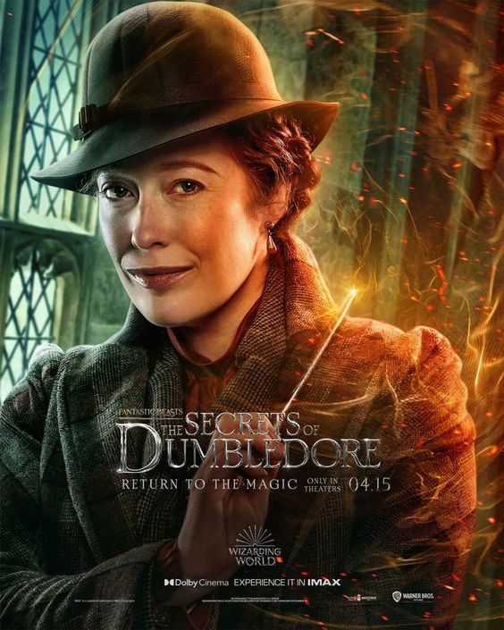
Foto de Victoria Yeates e a personagem que interpreta Bunty
Victoria Natalie Yeates é uma atriz inglesa. Ela é mais conhecida por seu papel como Irmã Winifred na série dramática de época Call the Midwife. Ela também apareceu no filme Animais Fantásticos: Os Crimes de Grindelwald e sua sequência Animais Fantásticos: Os Segredos de Dumbledore.
Nascimento: 19 de abril de 1983, Bournemouth, Reino Unido
Cônjuge: Paul Housden (desde 2018)
William Nadylam como Yusuf Kama
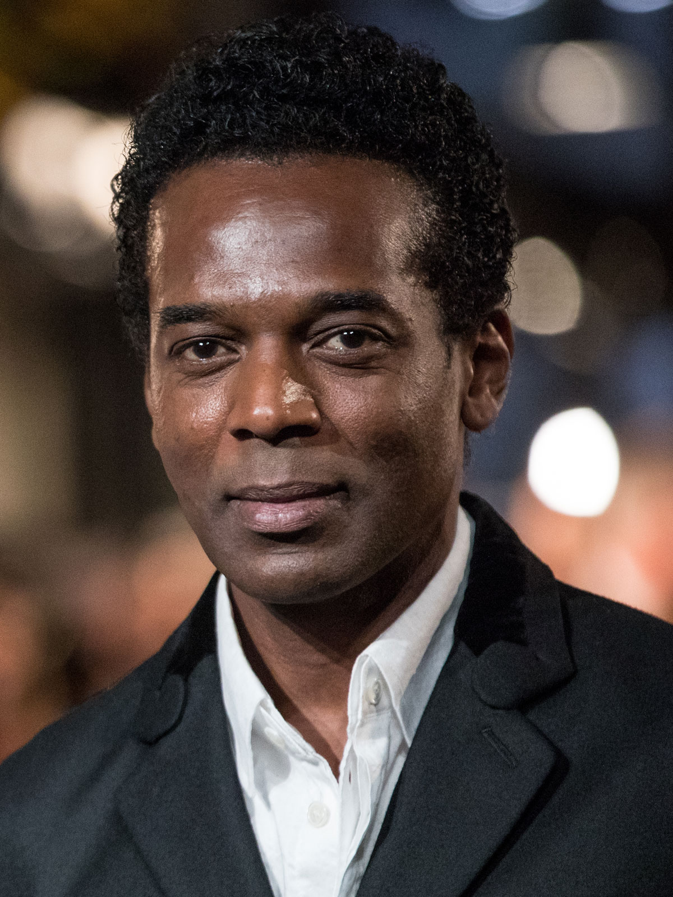
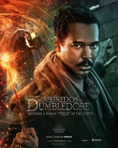
Foto de William Nadylam e o personagem que interpreta Yusuf Kama
William Nadylam é um ator francês. Ele é mais conhecido por interpretar o papel de Yusuf Kama na série de filmes Animais Fantásticos da franquia Wizarding World.
Nascimento: 02 de agosto de 1966, Montpellier, França